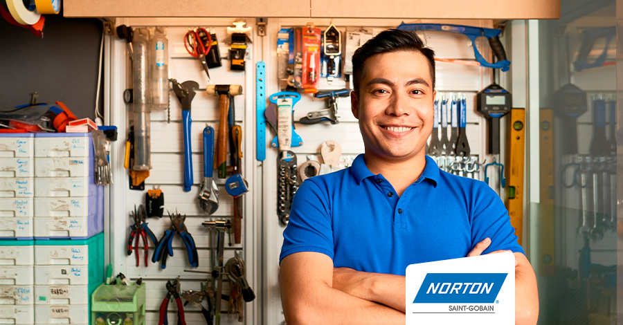
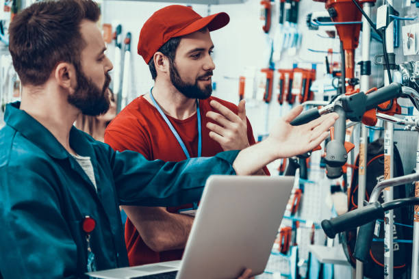
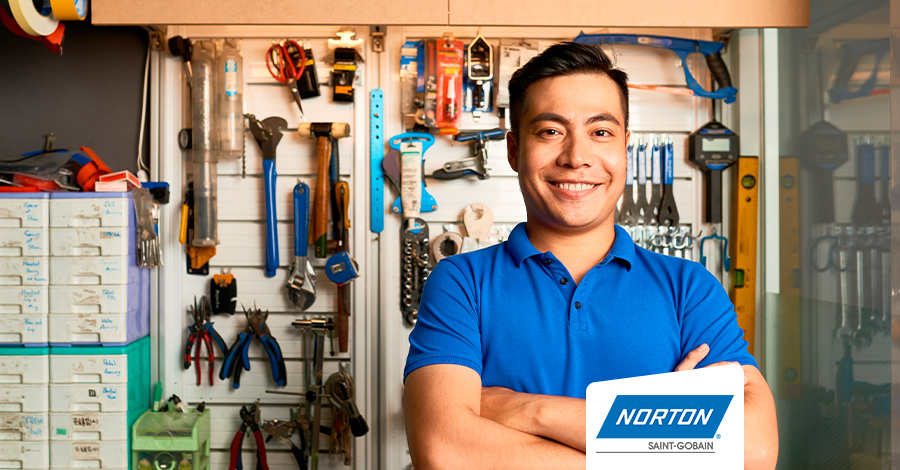
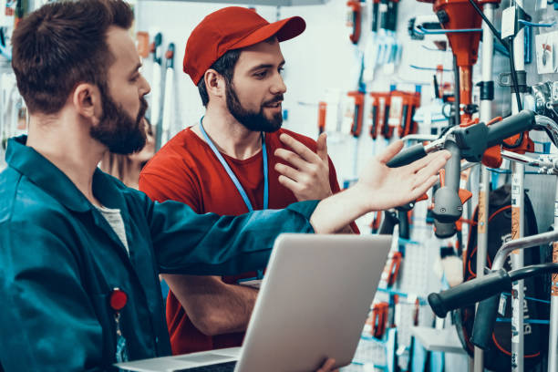

Pailita Orejita
La ferreteria tiene todo lo que necesito
Leer másLas primeras ferreterías en línea aparecieron en la década de 1990. Por norma general, son empresas tradicionales que buscan otro canal de venta, utilizando la web como escaparate y enviando los productos directamente al cliente. Actualmente son muchas las ferreterías que han iniciado el proceso de crear su tienda en línea para acceder al nuevo canal, pero este canal requiere de tiempo, recursos y especialización, y al sector ferretero le falta cierta renovación. Cada vez más los grandes del sector están ganado cuota de mercado año tras año, no solo en el canal en línea donde las diferencias son muy importantes, sino que también en el canal tradicional. Una grata excepción en el canal en línea es alguna tienda tradicional, que ha conseguido con especialización una buena cuota de mercado. El sector está avanzado rápidamente hacia un mercado más competitivo y mejor preparado. Vienen cambios importantes en el sector de la ferretería tradicional, y debe renovarse y apostar por las nuevas tecnologías y el mercado en línea. Algunas empresas de ferretería en línea implementan en su modelo de negocio una amplia gama de facilidades como atención al cliente mediante WhatsApp e incluso canales de Youtube donde explican como realizar tareas de bricolaje a sus clientes.
 


